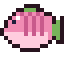
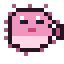
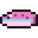

Catch as many (and as heavy) fish as you can at the Visguh's pond; you keep the special guh fish.
Vis zo veel (en zo zwaar) mogelijk bij de Visguh; de bijzondere guhvissen mag je houden.
The Guhfish ContestDe Guhvis-wedstrijd
At the Guhfish Pond (guhvis_vijver, a large pond about 96 blocks across in the Guhmension that is rare, like the fair), the Visguh runs the Guhfish contest. She lends you a rod, and you fish her pond for 3 minutes. Every bite is a special fish: Cheese Fish, Chubby Perch, Guh Puffer, Pink Njeg Trout, the Mika Catfish (costs points!) and the legendary Golden Guhfish. The heavier the fish, the more points. You keep every fish: they're edible trophies, and each Golden Guhfish is a real collector's piece that shines and carries your name, its weight and its number. Friends can join, and the winner gets bonus vouchers. Your points turn into visbonnen, which buy the angler outfit for your guh (only sold here). After every contest the chat shows your personal best. The world top 3 (most points, heaviest fish ever) floats above the record board at the Visguh's desk. VAHOEG!
Bij de Guhvisvijver (guhvis_vijver, een grote vijver van zo'n 96 blokken breed in de Guhmensie, net zo zeldzaam als de kermis) houdt de Visguh de Guhvis-wedstrijd. Je leent haar hengel en vist 3 minuten in haar vijver. Elke beet is een speciale vis: kaasvis, vadsbaars, guhpuffer, roze njegforel, de Mika-meerval (kost punten!) en de legendarische Gouden Guhvis. Hoe zwaarder de vis, hoe meer punten. Alle vissen mag je houden: je kunt ze opeten of bewaren als trofee, en elke Gouden Guhvis is een echt verzamelstuk dat glimt en jouw naam, zijn gewicht en een nummer draagt. Vrienden kunnen meedoen en de winnaar krijgt extra visbonnen. Punten worden visbonnen, en daarmee koop je het vadsige vispakje voor je guh (alleen hier te koop). Na elke wedstrijd zie je je persoonlijke record in de chat. De top 3 van de wereld (meeste punten en vadsigste vis ooit) zweeft boven het recordbord bij de Visguh. VAHOEG!





Prizes: clothesPrijzen: kleding
 Vadsig vissershoedje 6 visbonnen
Vadsig vissershoedje 6 visbonnen Guhvisvest 10 visbonnen
Guhvisvest 10 visbonnen Vis-aan-de-haak 8 visbonnen
Vis-aan-de-haak 8 visbonnen
Highscores in the GuhdexHighscores in de Guhdex
- Makkelijk: punten
- Medium: punten
- Lastig: punten
- Makkelijk: zwaarste vis
- Medium: zwaarste vis
- Lastig: zwaarste vis